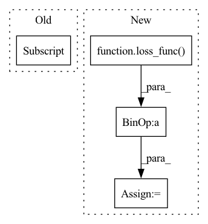

Pattern ID :36287

Before Change
test_result_2 = render_image(fine_net, test_cam_tf[1], 200, test_focal, near_t, far_t, fine_sample_pnum)
render_timer.toc()
test_loss = loss_func(test_result_1, testset[0].cuda())
test_loss += loss_func(test_result_2, testset[1].cuda())
eval_timer.toc()
writer.add_scalar("Test Loss", loss, test_cnt)
print("Evaluation in epoch: %4d / %4d\t, test counter: %d test loss: %.4f\taverage time: %.4lf\tavg render time:%lf\tremaining eval time:%s"%(
After Change
fine_rendered, _ = NeRF.render(fine_rgbo, fine_lengths, fine_samples[:, :, 3:6].norm(dim = -1))
opt.zero_grad()
loss:torch.Tensor = loss_func(coarse_rendered, rgb_targets) + loss_func(fine_rendered, rgb_targets)
train_timer.toc()
loss.backward()
opt.step()
In pattern: SUPERPATTERN
Frequency: 3
Non-data size: 4
Instances
Fragment ID: 102710591
Project Name: enigmatisms/nerf
Commit Name: 5bf2199afe3d4eff27be923b0e6d62a3118af597
Time: 2022-04-13
Author: 984041003@qq.com
File Name: train.py
M Class Name: AnonimousClass
N Class Name: AnonimousClass
M Method Name: main(0)
N Method Name: main(0)
M Parent Class:
N Parent Class:
M File Name: train.py
N File Name: train.py
M Start Line: 66
M End Line: 188
N Start Line: 73
N End Line: 196
'>
Before Change
coarse_samples = coarse_samples[:, :-1, :].contiguous()
coarse_rgbo = coarse_net.forward(coarse_samples)
coarse_rendered, normed_weights = NeRF.render(coarse_rgbo, coarse_lengths, coarse_samples[:, :, 3:6].norm(dim = -1))
loss = loss_func(coarse_rendered, coarse_samples[:, 0, -3:])
fine_samples, fine_lengths = inverseSample(normed_weights, coarse_cams, fine_sample_pnum, near_t, far_t)
fine_samples, fine_lengths = NeRF.coarseFineMerge(coarse_cams, coarse_lengths, fine_lengths) // (ray_num, 192, 6)
// 此处存在逻辑问题，需要第二次sort，并且RGB需要整理出来
After Change
// 此处存在逻辑问题，需要第二次sort，并且RGB需要整理出来
fine_rgbo = fine_net.forward(fine_samples)
fine_rendered, _ = NeRF.render(fine_rgbo, fine_lengths, fine_samples[:, :, 3:6].norm(dim = -1))
loss = loss + loss_func(fine_rendered, gt_rgb)
train_timer.toc()
opt_c.zero_grad()
opt_f.zero_grad()
'>
Fragment ID: 102710606
Project Name: enigmatisms/nerf
Commit Name: 06ab00cc67df78b580773caa3b55f80013328bd1
Time: 2022-04-01
Author: 984041003@qq.com
File Name: train.py
M Class Name: AnonimousClass
N Class Name: AnonimousClass
M Method Name: main(0)
N Method Name: main(0)
M Parent Class:
N Parent Class:
M File Name: train.py
N File Name: train.py
M Start Line: 56
M End Line: 138
N Start Line: 56
N End Line: 139
'>
Before Change
)
pca_loss = MultiviewPCALoss(
pred_keypoints_unsupervised,
self.pca_param_dict["discarded_eigenvectors"],
self.pca_param_dict["epsilon"],
)
alpha, beta = 1, 1
After Change
tot_loss = 0.0
tot_loss += supervised_loss
for loss_name, loss_func in self.loss_function_dict.items():
add_loss = self.loss_params[loss_name]["weight"] * loss_func(
predicted_us_keypoints,
**self.loss_params[loss_name]
)
tot_loss += add_loss
// log individual unsupervised losses
self.log(
loss_name + "_loss",
'>
Fragment ID: 102710589
Project Name: danbider/lightning-pose
Commit Name: b6eb45c9e6b36a0aadf7793a09800b67c5da3d12
Time: 2021-09-21
Author: ubuntu@ip-172-31-72-121.ec2.internal
File Name: pose_est_nets/models/new_heatmap_tracker.py
M Class Name: SemiSupervisedHeatmapTracker
N Class Name: SemiSupervisedHeatmapTracker
M Method Name: training_step(3)
N Method Name: training_step(3)
M Parent Class: HeatmapTracker
N Parent Class: HeatmapTracker
M File Name: pose_est_nets/models/new_heatmap_tracker.py
N File Name: pose_est_nets/models/new_heatmap_tracker.py
M Start Line: 263
M End Line: 306
N Start Line: 261
N End Line: 301